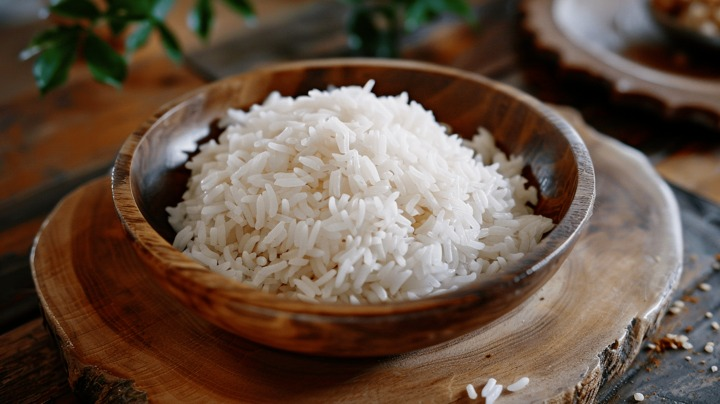

Bhaat
Bhaat-Simple Indian Cooked Plain Rice

In India, Bhaat simply refers to cooked rice. There are many varieties of rice used and different cooking methods depending on the dish and region
Ingredients:
- 300 grams of White Plain Rice
- 1 Pan
- 300 ml of Water
Instructions:
- Boil the Water in the Pan in high flame(5 minutes at most)
- Wash the Rice two times and pour it in the boiled water
- Cover the Pan and let it cook till Rice fully absorb the Water in high flame(15-20 minutes at most)
- When Rice fully absorb Water, lower the flame and mix it, revolve the pan little and cover it again for cooking in low flame(5 minutes at most)
- Switch off the flame after 5 minutes, let the rice be covered so it finished cooking in steams(10 minutes at most)
- Your Bhaat-Simple Indian Plain Rice is ready for Serving and Eating! with Dal, Bhaaji and Roti
Enjoy Your Bhaat with other "Desi-Khana"